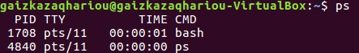
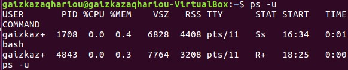
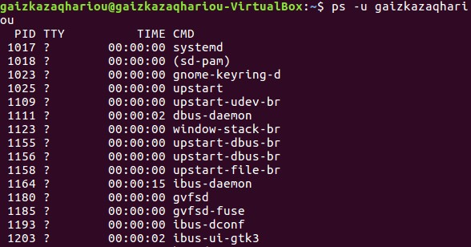
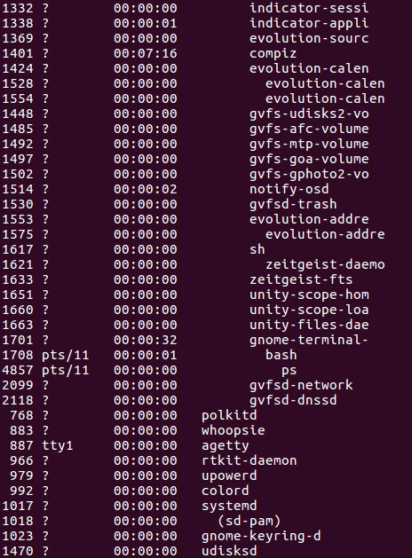
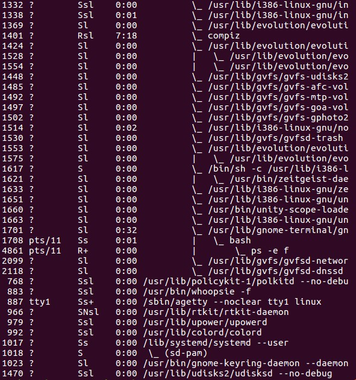
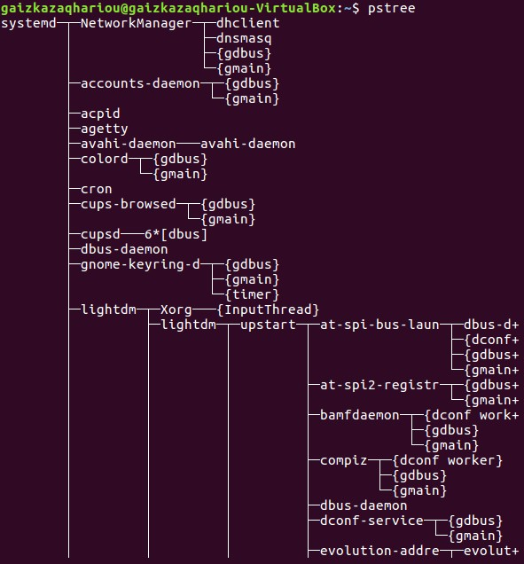
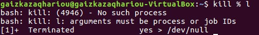

Manajemen Proses
Proses adalah sebuah program yang sedang dieksekusi. Sedangkan program adalah kumpulan instruksi yang ditulis ke dalam bahasa yang dimengerti sistem operasi. Sebuah proses membutuhkan sejumlah sumber daya untuk menyelesaikan tugasnya. Sumber daya tersebut dapat berupa CPU time, alamat memori, berkas-berkas, dan perangkat-perangkat M/K. Sistem operasi mengalokasikan sumber daya-sumber daya tersebut saat proses itu diciptakan atau sedang diproses/dijalankan. Ketika proses tersebut berhenti dijalankan, sistem operasi akan mengambil kembali semua sumber daya agar bisa digunakan kembali oleh proses lainnya.
Sistem operasi bertanggung jawab atas aktivitas-aktivitas yang berkaitan dengan manajemen proses seperti:
- Membuat dan menghapus proses pengguna dan sistem proses. Sistem operasi bertugas mengalokasikan sumber daya yang dibutuhkan oleh sebuah proses dan kemudian mengambil sumber daya itu kembali setelah proses tersebut selesai agar dapat digunakan untuk proses lainnya.
- Menunda atau melanjutkan proses. Sistem operasi akan mengatur proses apa yang harus dijalankan terlebih dahulu berdasarkan berdasarkan prioritas dari proses-proses yang ada. Apa bila terjadi 2 atau lebih proses yang mengantri untuk dijalankan, sistem operasi akan mendahulukan proses yang memiliki prioritas paling besar.
- Menyediakan mekanisme untuk proses sinkronisasi. Sistem operasi akan mengatur jalannya beberapa proses yang dieksekusi bersamaan. Tujuannya adalah menghindarkan terjadinya inkonsistensi data karena pengaksesan data yang sama, juga untuk mengatur urutan jalannya proses agar setiap proses berjalan dengan lancar
- Menyediakan mekanisme untuk proses komunikasi. Sistem operasi menyediakan mekanisme agar beberapa proses dapat saling berinteraksi dan berkomunikasi (contohnya berbagi sumber daya antar proses) satu sama lain tanpa menyebabkan terganggunya proses lainnya.
- Menyediakan mekanisme untuk penanganan deadlock. Deadlock adalah kondisi saling menunggu untuk mendapatkan sumber daya. Sistem operasi harus bisa mencegah, menghindari, dan mendeteksi adanya deadlock. Jika deadlock terjadi, sistem operasi juga harus dapat memulihkan kondisi sistemnya.
Ada empat konsep dasar pada manajemen proses, yaitu:
Multiprogrammingmerupakan salah satu teknik penjadwalan dimana suatu proses akan menggunakan CPU sampai proses tersebut beralih ke status wait (misalnya meminta I/O) atau selesai. Pada saat wait , maka CPU tidak sedang melakukan aktivitas atau nganggur (idle). Untuk mengatasi hal ini, maka CPU dialihkan ke proses lain pada saat suatu proses sedang dalam wait, demikian seterusnya.Pseudoparallelismmerupakan penggunaan lebih dari satu CPU untuk menjalankan sebuah program secara simultan. Idealnya, parallel processing membuat program berjalan lebih cepat karena semakin banyak CPU yang digunakan.Multiprocessingmerujuk kepada kemampuan pemrosesan komputer yang dilakukan secara serentak. Hal ini dimungkinkan dengan menggunakan dua CPU atau lebih dalam sebuah sistem komputer. Istilah ini juga dapat merujuk kepada dukungan sebuah sistem untuk mendukung lebih dari satu prosesor dan mengalokasikan tugas kepada prosesor-prosesor tersebut.Distributed Processingpada konsep manajemen proses ini semua proses pengolahan data dikerjakan secara bersama antara komputer pusat dengan beberapa komputer yang lebih kecil dan saling dihubungkan melalui jalur komunikasi. Setiap komputer tersebut memiliki prosesor mandiri sehingga mampu mengolah sebagian data secara terpisah, kemudian hasil pengolahan tadi digabungkan menjadi satu penyelesaian total. Jika salah satu prosesor mengalami kegagalan atau masalah yang lain akan mengambil alih tugasnya.
Manajemen Proses pada Sistem Operasi Linux
Pada sistem operasi Linux, setiap program yang berjalan merupakan proses. Ketika sistem operasi pertama kali dijalankan, saat itu proses yang bertanggung jawab untuk memuat (load) Kernel diciptakan. Proses yang pertama kali diciptakan di Linux disebut init. Konsep proses di Linux memiliki kemiripan dengan konsep file permission yang mana setiap user hanya dapat memanipulasi proses yang menjadi “milik” nya. Setiap proses memiliki Process ID (PID) yang merupakan nomor unik yang dapat digunakan untuk berinteraksi dengan proses yang bersangkutan.
Tipe-tipe Proses dalam Linux
Tipe-tipe proses dalam Linux, dibagi ke dalam 3 bagian, yaitu :
- Interactive adalah Proses yang diprakarsai oleh sebuah shell dan berjalan dalam foreground dan background. seperti : terminal, software running, dll.
- Batch adalah Sebuah seri dari proses-proses yang dijadwalkan untuk dieksekusi pada suatu waktu tertentu, proses batch ini juga tidak berhubungan dengan terminal, tapi menunggu dieksekusi secara sekuensial.
- Daemon adalah Proses yang diinisialisasi saat booting untuk membentuk suatu fungsi- fungsi sistem yang dibutuhkan, bila tidak ada request maka akan berada pada keadaan idle, seperti : LPD, NFS, dan DNS.
Identitas Proses
Berikut adalah beberapa identitas dari Proses yang ada di Linux :
- PID ( Proccess ID ) adalah pengenalan unik suatu proses, dimana digunakan untuk menentukan proses-proses mana yang di bawa saat suatu aplikasi dijalankan atau melakukan proses pengiriman signal, mengubah, dan menunggu proses lainnya. PID sendiri merupakan bilangan 32 bit yang dibatasi oleh Linux dari range 0-32767 untuk menjamin kompatibilitas dengan UNIX tradisional.
- Credentials ( Mandat ) adalah Pengaturan akses yang dipengaruhi oleh User ID dan Group ID. Jadi kita dapat mengatur hak akses atau Credetials setiap user, group, dll.
- Personality adalah sebuah hal yang cukup jarang ditemukan dalam sistem UNIX, namun sangat berpengaruh dalam proses system call dan pengiriman signal dari suatu aplikasi.
Status Proses yang dikenali dalam Linux
- Task Running, yaitu proses yang siap untuk dieksekusi CPU
- Task Interruptable, yaitu proses yang menunggu sebuah kondisi. Interupsi, Sinyal dan aktifitas lain akan membangunkan proses.
- Task Uninterruptable, yaitu proses yang sedang sleep, dan tidak dapat di interrupt oleh signal.
- Task Stopped, yaitu proses yang dihentikan
- Task Zombie, yaitu proses telah berhenti, namun masih memiliki struktur data
Perintah Manajemen Proses pada Linux
Perintah inti dari proses manajemen proses di Linux adalah perintah ps dan kill.
Perintah ps
Perintah atau command ps (process status) di gunakan untuk menampilkan informasi proses yang ada
termasuk nomor PID (Process Identification Number) dari proses tersebut. Proses atau biasa disebut
task akan berjalan jika ada sebuah aplikasi yang sedang dijalankan, setiap proses yang berjalan oleh
system diberi nomor PID yang unik.
Sebelum mempelajari dan mencoba menggunakan perintah-perintah ps untuk manajemen proses
pada sistem operasi Linux, di bawah ini terdapat beberapa istilah mengenai output perintah ps :
PI: nomor identitas unik untuk mengidentifikasi sebuah prosesUSER: pengguna yang merupakan pemilik prosesTTY: nama terminal dimana proses tersebut aktifCMD: instruksi yang digunakan%CPU: persentase CPU time yang digunakan oleh proses tersebut%MEM: persentase sistem memori yang digunakan prosesVSZ: Virtual Size atau memori virtual yang digunakan pada prosesRSS: Real System Storage yaitu jumlah memori yang sebenarnya digunakanSTAT: status proses tersebut apakah sedang dalam status S (sleeping), R (running) atau Z (Zombie)START: waktu dimana proses tersebut diaktifkanPR: angka prioritas prosesNI: Nice Value yaitu nilai yang menunjukkan urutan prioritas suatu proses, semakin kecil nilai NI maka proses tersebut semakin diprioritaskanVIRT: memory virtual yang digunakan oleh prosesRES: memory fisik yang digunakan oleh prosesSHR: proses yang disharingTIME+: total waktu untuk seluruh aktivitas proses
$ psPerintah ps tanpa diikuti option apapun, akan menampilkan proses yang ada dengan output standart dari perintah ps.
$ ps uPerintah ps u akan menampilkan proses yang ada beserta nama user yang memiliki proses tersebut juga disertai keterangan lainnya dari proses tersebut.
$ ps –u (nama user)Perintah ps -u (nama user) akan menampilkan secara spesifik proses yang ada berdasarkan pada user yang ditentukan.
$ ps –aPerintah ps -a akan menampilkan proses yang sedang dieksekusi pada satu user yang sedang aktif.
$ ps –auPerintah ps -au akan menampilkan proses yang sedang dieksekusi pada semua user.
$ ps –eHPerintah ps -eH akan menampilkan hubungan proses parent dan child. Proses child akan muncul dibawah proses parent dan proses child ditandai dengan awalan beberapa spasi. Pada perintah ini opsi e digunakan untuk memilih semua proses dan opsi H untuk menghasilkan tampilan proses secara hierarki.
$ ps –eFPerintah ps -eF akan menampilkan hubungan proses parent and child sama seperti perintah sebelumnya tetapi lengkap dengan keterangan lain dan opsi F akan menampilkan status proses dengan karakter grafis (\dan_).
$ pstreePerintah pstree akan menampilkan hubungan proses parent and child dalam hirarki seperti skema pohon yang bercabang.

Perintah kill
Perintah kill adalah salah satu perintah dasar Linux yang digunakan untuk menghentikan atau mematikan proses yang sedang berjalan pada Sistem Operasi Linux / UNIX. Dengan perintah ini kita dapat menghentikan proses yang mengganggu performa atau proses yang tidak dibutuhkan, dll.
$ kill %(nomor job)Untuk menghentikan job, gunakan perintah kill diikuti job number atau PID proses. Untuk identifikasi job number, diikuti prefix dengan karakter%. contoh :kill %1
$ kill (PID)Perintah killdigunakan untuk menghentikan proses berdasarkan nomor PID prosesnya. $ pkill (nama_proses)Perintah pkill (nama_proses) digunakan untuk menghentikan proses berdasarkan nama prosesnya.$ killall (nama_proses)Perintah killall (nama_proses) digunakan untuk menghentikan seluruh proses aplikasi berdasarkan nama prosesnya hingga ke bagian terdalam.$ renice (prioritas) (PID)Perintah renice (prioritas) (PID) digunakan untuk mengubah prioritas suatu proses berdasarkan PID. Didalam sistem operasi Linux skala prioritasnya adalah -20 hingga 19. Skala paling kecil akan mendapatkan prioritas terbesar untuk mendapatkan tugas dan segera akan diproses. User biasa hanya memiliki hak untuk mengganti NI menjadi lebih besar. Hanya root yang dapat mengganti nilai NI suatu PID menjadi lebih kecil.